A · Conservative
The existing brand, disciplined.
#061228Ground
#0F2242Surface
#003FB3Action
#7191F7Accent
#DDE7FEText
#9DB0D9Muted
Muted on ground 8.4:1 · white on action 8.8:1
Warm, calm and evidence-led — a page that looks like the product it's selling.
Guidance, not law. Companion to library.md (the problem-indexed references) and moodboard.md (the written version). Every screenshot below was captured live on 2026-08-25.
The marketing site is a near-black field with an electric-blue WebGL shader. The product it sells is white, soft-blue and friendly. Right now, everyone who converts walks from one into the other and feels a jolt.
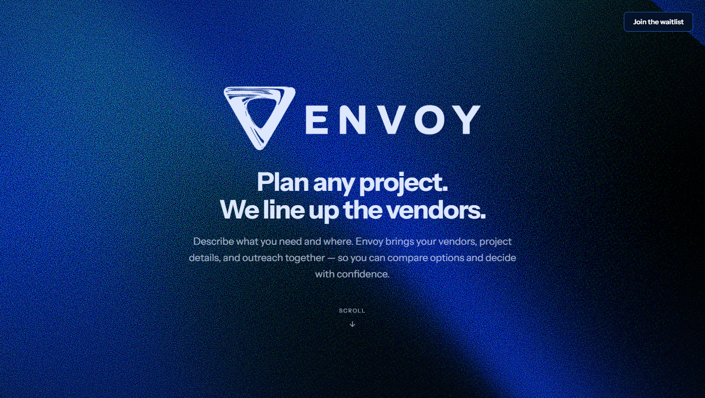
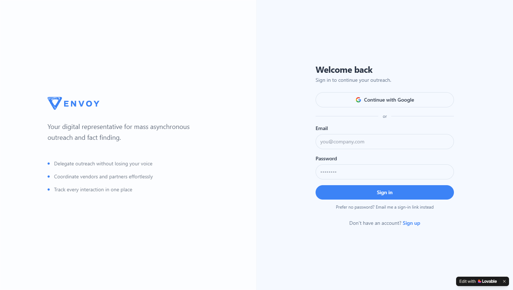
So warming the page is a correction, not a preference. "Make it less masculine and technical" isn't a request to abandon the brand — it's a request to make the front door match the house.
The current palette is one hue with no warm tone anywhere — a large part of why it reads cold. Each direction keeps Envoy's blue and changes what it sits on.
The existing brand, disciplined.
Muted on ground 8.4:1 · white on action 8.8:1
Light ground, one warm accent.
Muted on paper 7.3:1 · clay on paper 5.3:1 · white on action 9.6:1
Editorial. Paper, ink, one red.
Muted on paper 7.2:1 · red on paper 6.6:1
Ratios measured, not estimated. The current site fails AA — body copy bottoms out at 1.26:1 where the animated shader drives bright cyan behind text.
A geometric sans at 700 with tight tracking is the house style of developer tools. That, as much as the palette, is what "technical" means here. Three positions, rendering live:
Envoy has to say "a 1920s kitchen renovation" and "an outdoor wedding for 150" in the same breath without either sounding out of place. That rules out both ends.
All captured live. Full write-ups in library.md.
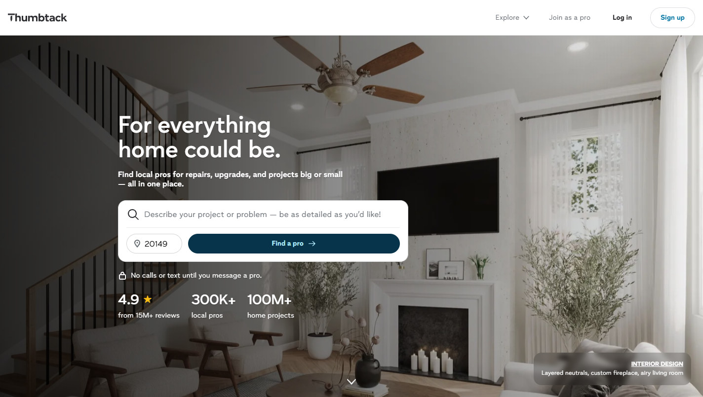
Hero's main element is an input, not a claim: “Describe your project or problem — be as detailed as you'd like!”
Steal: when a product serves many project types, make the hero an input. The visitor supplies the specificity the page can't.
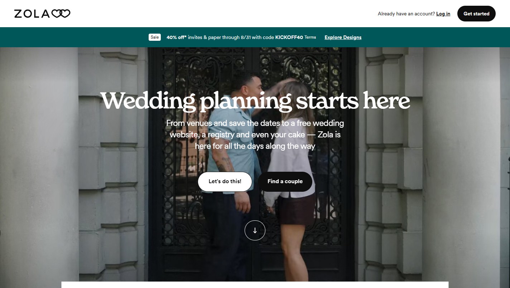
Serif display over a real photograph, plural warm copy, and a CTA that reads “Let's do this!”
Steal: serif + human photograph + contractions. And the CTA voice — “Join the waitlist” is a transaction; this is an invitation.
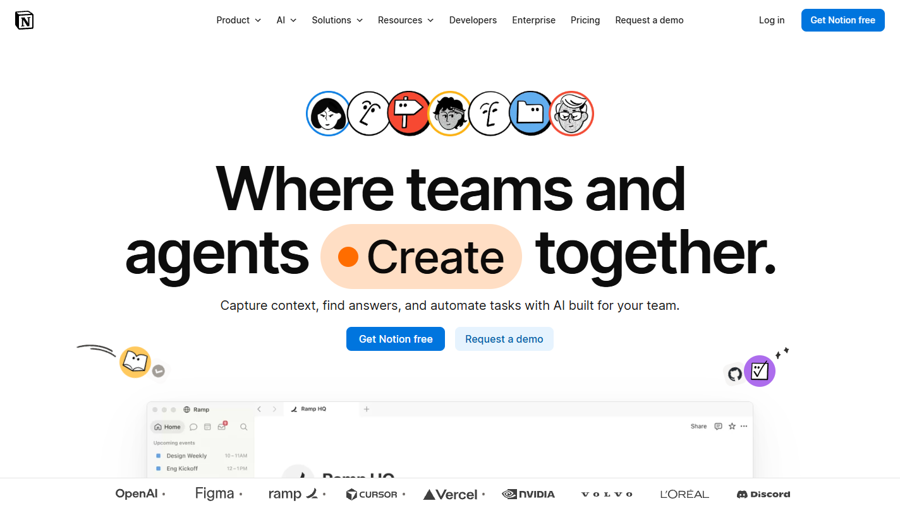
Abstract headline, then tabs and hyper-specific use-case cards immediately below.
Steal: two layers — warm promise up top, concrete worked examples below. Exactly the architecture for wedding / kitchen / offsite.
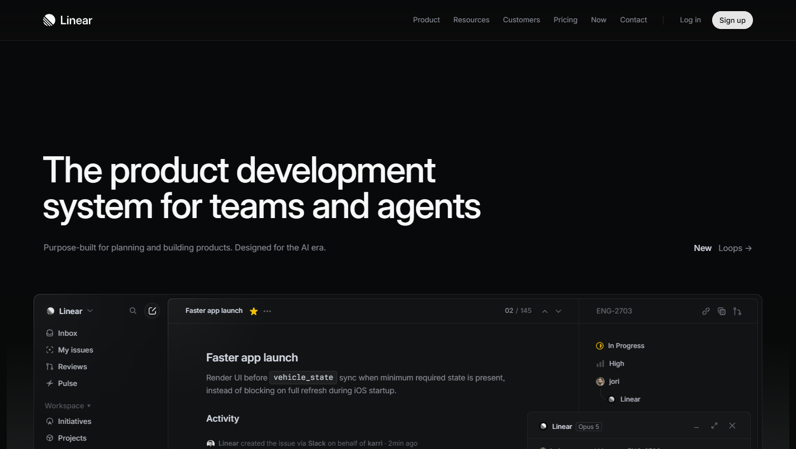
Roughly 60% of the page is product interface, with real-looking data — real issue IDs, real timelines.
Steal: the ratio, and pairing every claim with the pixel that proves it. Ignore the dense developer aesthetic.
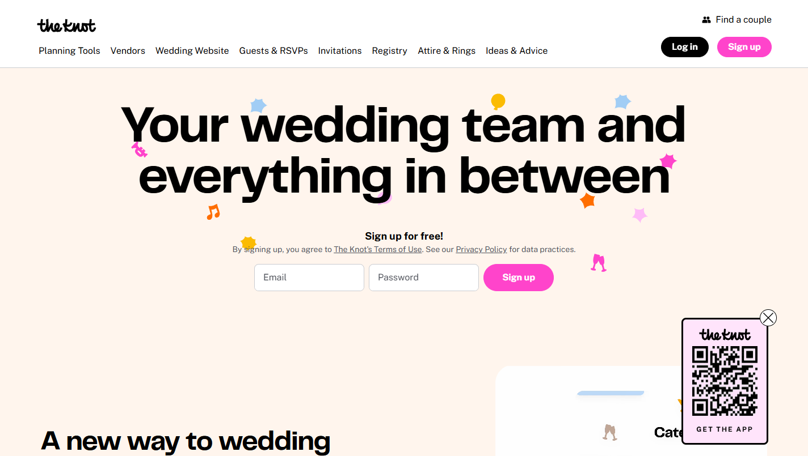
Vendor categories rendered as photographs rather than words, immediately below a short hero.
Steal: the fastest way to make “vendors” mean something is to show what a vendor is. Also the cheapest — stock is licensable.
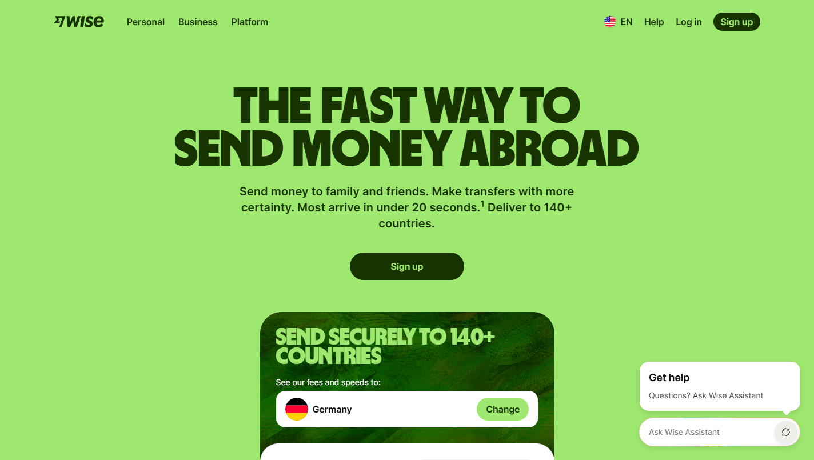
A working converter in the hero. Real answer, real fee, no account — then the signup ask.
Steal: directly transferable. The vendor-lineup generator is Envoy's currency converter. This one move fixes P2, S2 and the CTA problem at once.
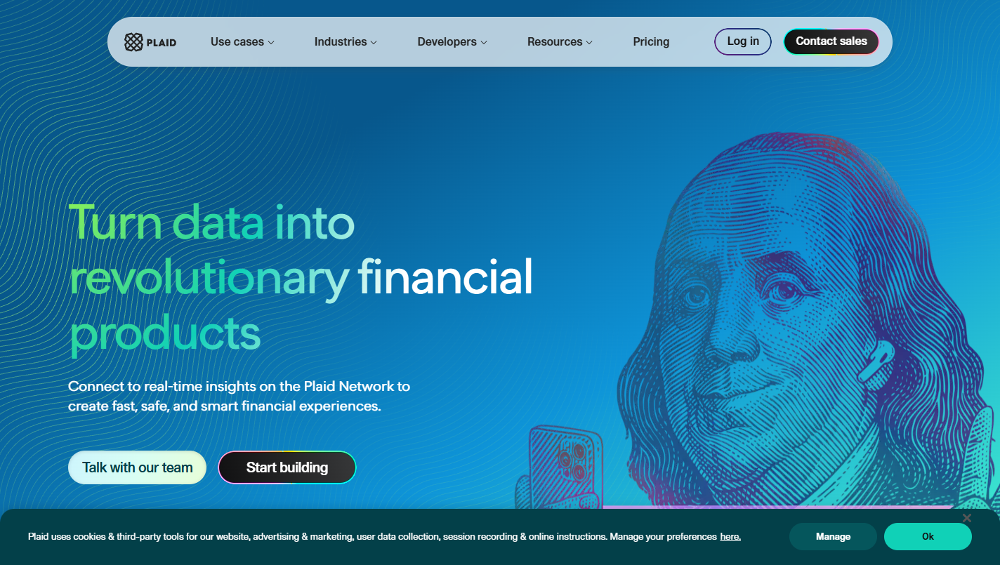
“When you connect to an app with Plaid, you're in control of who has access to your financial data.”
Steal: the grammar. Lead with the user's control, not the vendor's security posture. Envoy already owns a sentence of this exact shape.
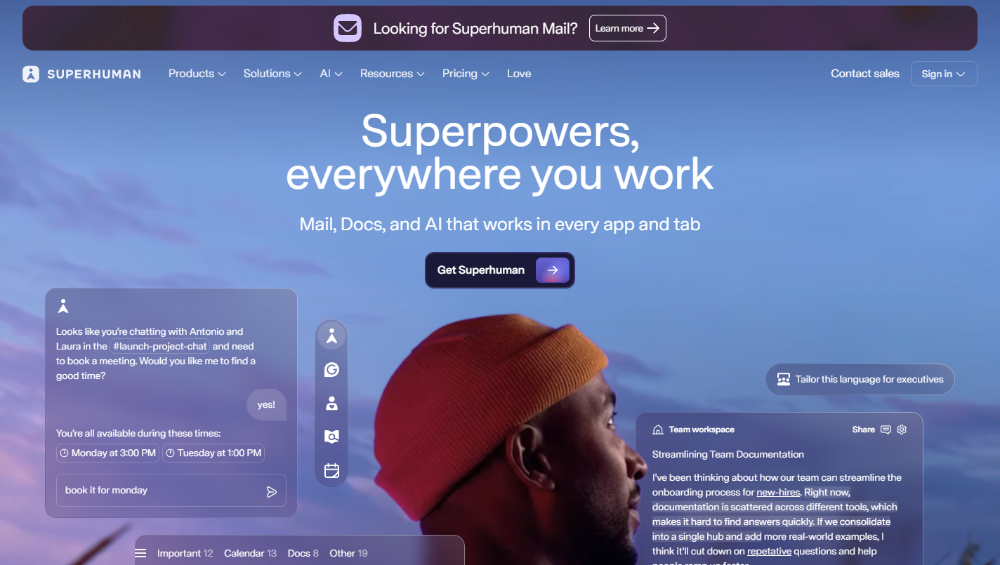
Asks for full inbox access and never addresses it on the homepage — trust is entirely by logo association.
Do the opposite. Borrowed credibility is closed to Envoy — no logos, no testimonials. That leaves transparency of mechanism.
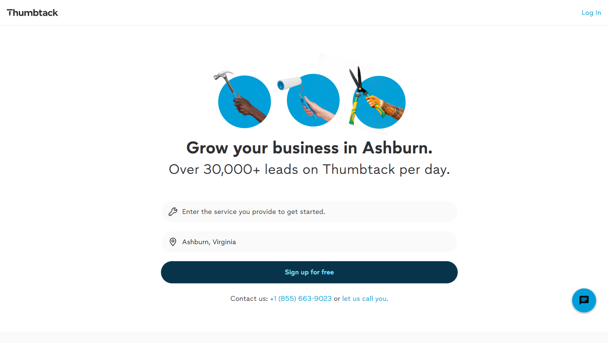
The pro side gets its own page, its own hero and its own tone. One nav link is the only shared surface.
Steal: the architecture — one nav link plus one signposted band low on the page. Everything else lives elsewhere.
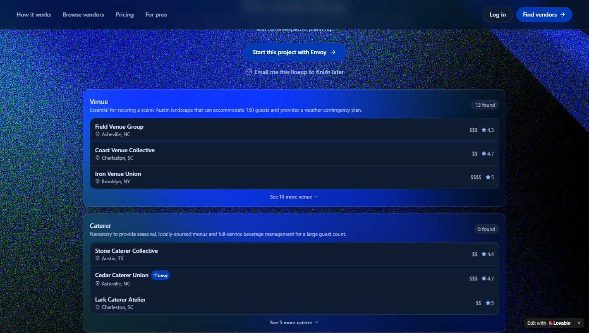
prefers-reduced-motion discipline — already right.